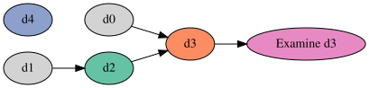
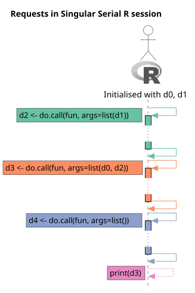
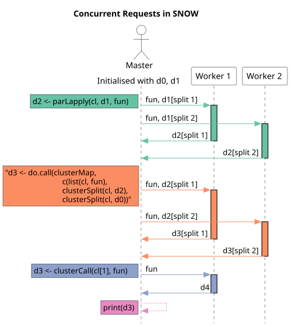
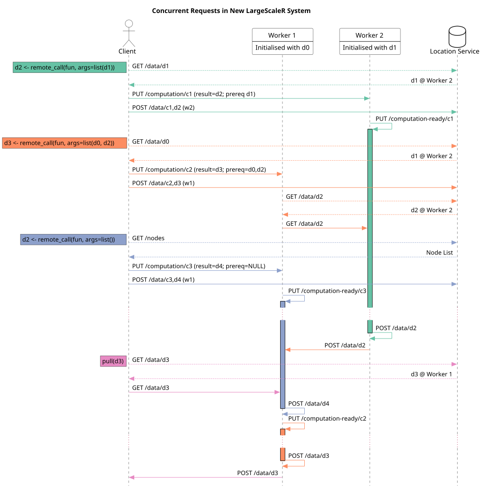

2022-03-17
This is an expansion of the previous report demonstrating a standard sequence of work that may take place in the system. The sequence is compared with it’s equivalents in a single session in serial, as well as the previous version of largescaler, and SNOW. The work sequence consists of three calls and an examination.
A topologically sorted graph of arguments for the calls is given in fig. 1.



